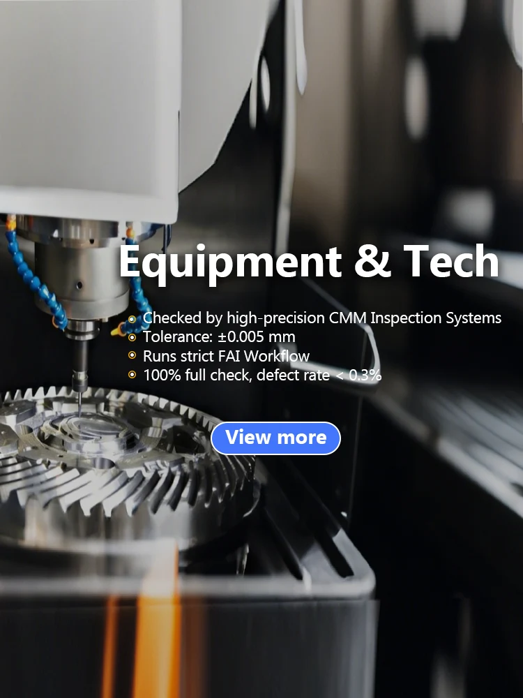
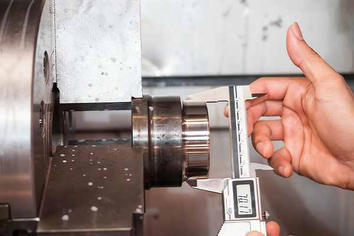
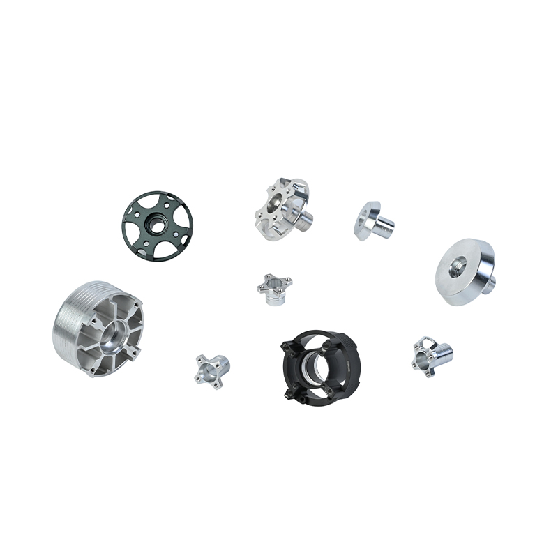
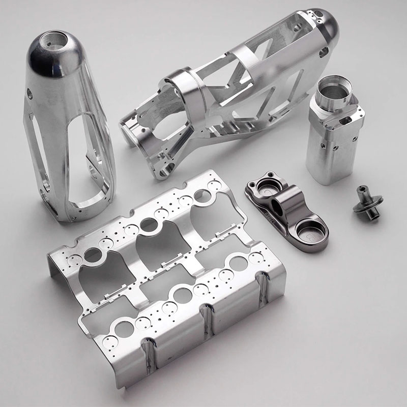
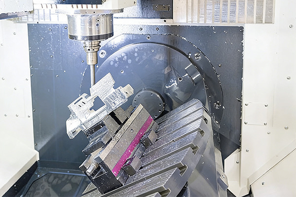
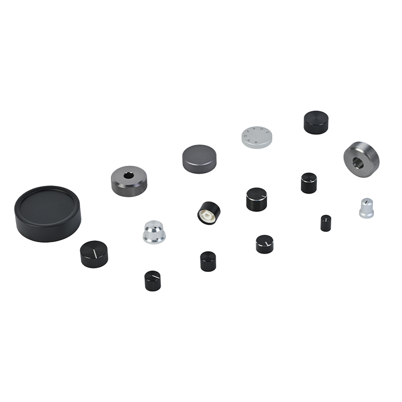
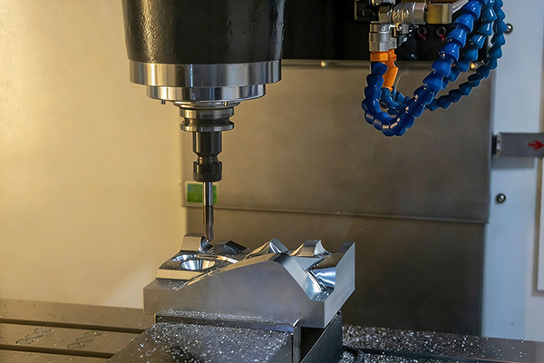

Tablet accessories
CNC Metal iPad Hub and Dock Components
Precision CNC metal parts for premium tablet hubs, docks, heat-dissipating housings, and expansion accessories.
The demo knowledge base covers practical applications where tolerance, surface finish, durability, and supplier communication influence sourcing decisions.

Precision CNC metal parts for premium tablet hubs, docks, heat-dissipating housings, and expansion accessories.

Custom precision components that require stable fit, surface finish, and long-term durability.

Precision CNC machined aluminum and stainless steel structural components for UAV and aerospace applications.

Custom machined stainless steel and aluminum parts where reliability and precision are critical.

Custom CNC machined robot joint and structural components for automation systems and robotic equipment.

CNC turned aluminum knobs and audio hardware components with knurled and anodized finishes.

Custom stamped metal parts for repeatability, cost control, and finish quality at higher volumes.
CNC turned nuts, studs, and fasteners in brass, aluminum, and stainless steel.
Instead of presenting a flat catalog, the site groups applications around buyer intent: prototype validation, overseas sourcing, and custom equipment builds.
DFM feedback, prototype machining, finishing decisions, and a path to small-batch production.
A sourcing path for overseas buyers who need one supplier to coordinate machining, fabrication, finishing, and quotation review.
Precise structural parts, robot joints, stable tolerances, and repeatable finishing for custom equipment builds.
Buyers should describe the application, material expectations, cosmetic finish, tolerance notes, quantity, and target use case before quotation.